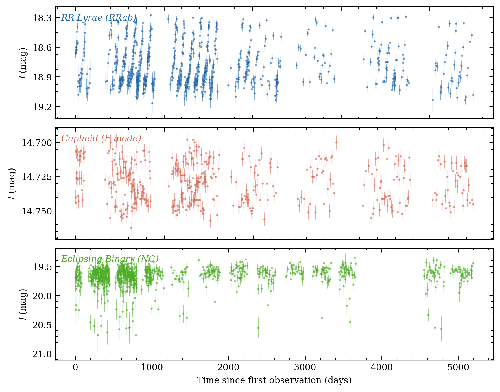
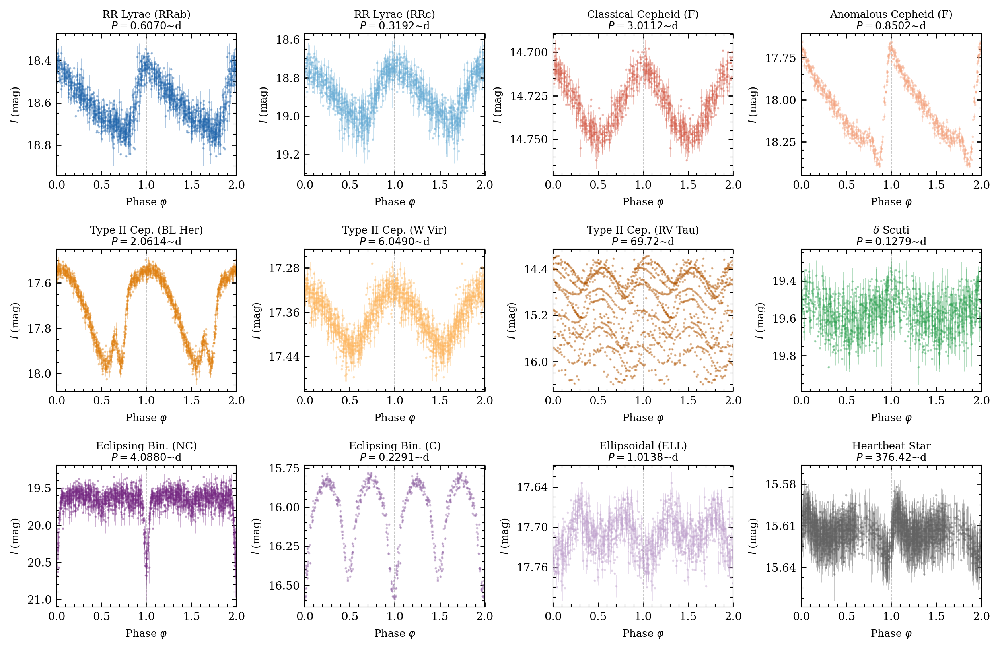
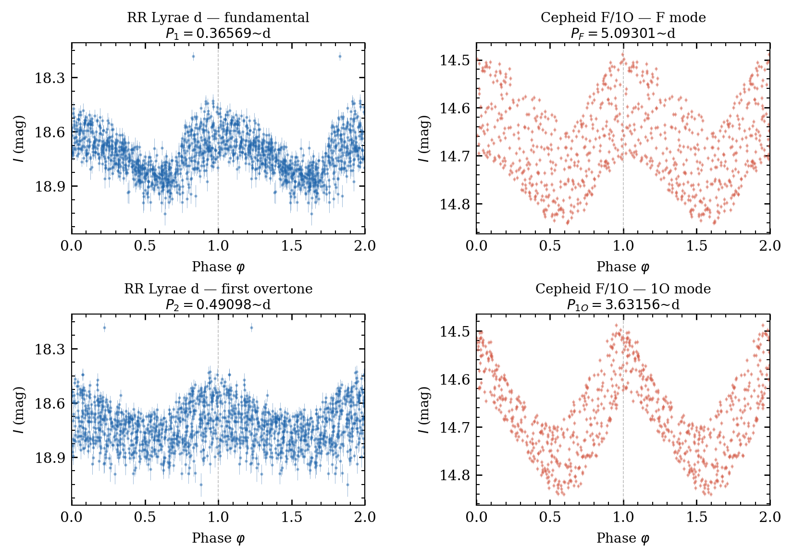
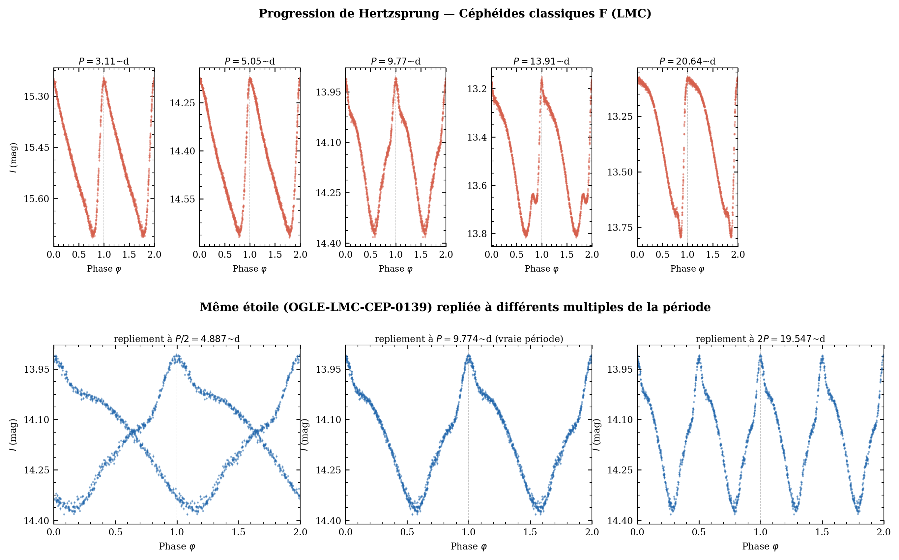
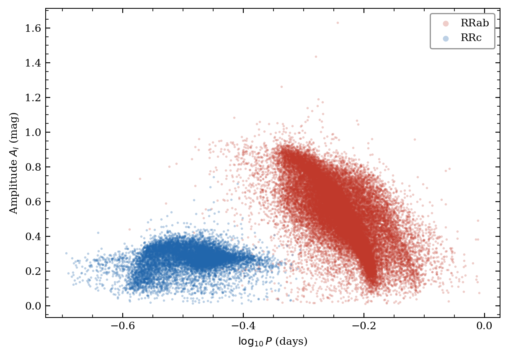
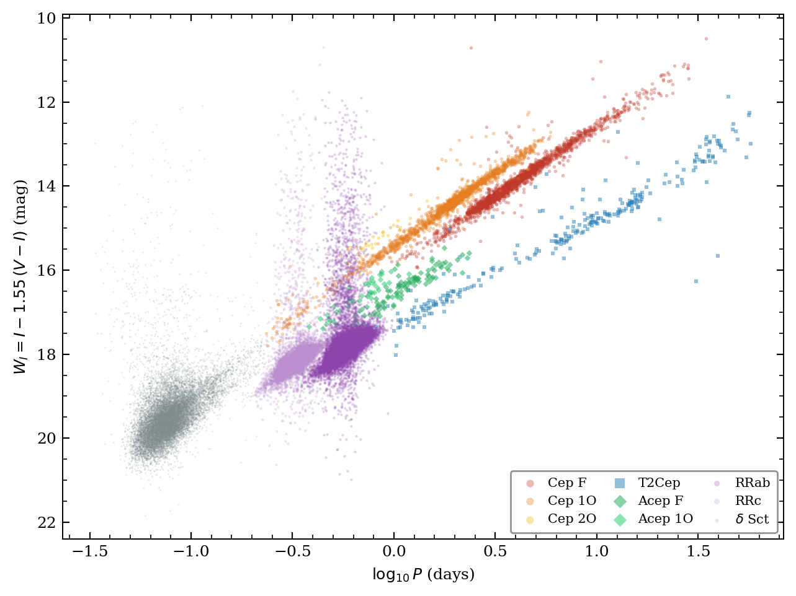
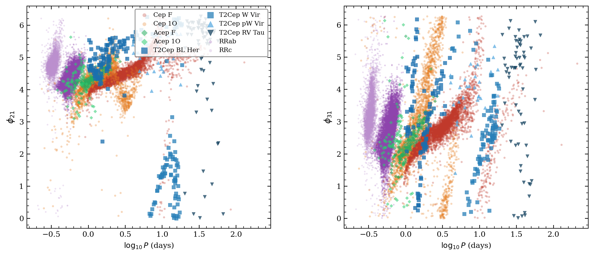
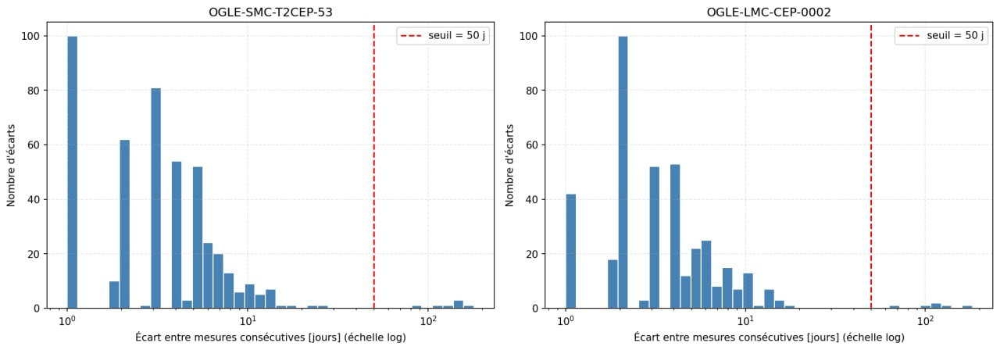

State Space Models for Astrophysics
Supervised by Alain Celisse · SAMM Lab, Paris 1 · 2026, ongoing
1 · Pourquoi des étoiles variables ?
Une étoile variable est une étoile dont la luminosité apparente varie mesurablement au cours du temps. Les mécanismes sous-jacents sont physiquement distincts : pulsations radiales entretenues, occultations mutuelles au sein d'un système binaire, modulations d'origine géométrique, et chacun imprime une signature propre dans la photométrie. Ces variations comptent parmi les rares observables qui contraignent directement la structure interne et l'état évolutif d'une étoile. L'objet d'étude élémentaire est la courbe de lumière : une série temporelle de triplets (t, m, σ), date julienne, magnitude apparente, incertitude photométrique à échantillonnage irrégulier.
Les données. OGLE-IV (Optical Gravitational Lensing
Experiment, quatrième phase ; Udalski et al., 2015) est un relevé photométrique
au sol mené depuis 2010 avec le télescope de 1,3 m de Las Campanas (Chili),
qui suit notamment les Nuages de Magellan en bande I et V. Son catalogue
dérivé, l'OGLE Collection of Variable Stars (OCVS), fournit pour chaque étoile
une classification experte, une période de référence et la photométrie complète.
Le présent travail porte sur un sous-ensemble d'environ 150 000 étoiles
réparties en six classes : céphéides classiques (cep), céphéides
anormales (acep), céphéides de type II (t2cep),
RR Lyrae (rrlyr), Delta Scuti (dsct) et binaires à
éclipses (ecl).

2 · Les six classes
Repliée sur sa période (§3), chaque classe présente une morphologie caractéristique, trace directe du mécanisme physique qui engendre la variabilité. Les six classes de l'OCVS se répartissent en deux familles : cinq classes de pulsateurs, et les binaires à éclipses où la variation est purement géométrique.
Céphéides classiques
Étoiles massives et jeunes en pulsation radiale, entretenue par le mécanisme κ. Périodes de ~1 à plus de 100 jours ; asymétrie montée rapide / descente lente typique.
Céphéides anormales
Même mécanisme de pulsation, mais sur des étoiles de plus faible masse dont la position dans la bande d'instabilité s'explique par une origine binaire (fusion ou transfert de masse). Périodes de ~0,4 à 2,5 jours.
Céphéides de type II
Pulsateurs radiaux évolués, de faible masse et de population ancienne. Trois sous-classes par période croissante : BL Her (1–4 j), W Vir (4–20 j), RV Tau (>20 j, minima alternés).
RR Lyrae
Pulsateurs radiaux âgés et pauvres en métaux, sur la branche horizontale. Périodes de ~0,2 à 1 jour ; sous-types RRab (mode fondamental, courbe asymétrique) et RRc (premier harmonique, courbe quasi sinusoïdale).
Delta Scuti
Étoiles de type A/F proches de la séquence principale, périodes inférieures à ~0,3 jour. Pulsation fréquemment multimode, combinant modes radiaux et non radiaux (cf. figure 3).
Binaires à éclipses
Variabilité d'origine géométrique : occultations mutuelles de deux étoiles en orbite. Morphologie gouvernée par la configuration du système (détachée, semi-détachée, à contact) et l'inclinaison orbitale.


3 · Le repliement en phase
Pour un signal de période P connue, chaque date d'observation se réduit à une phase φ = ((t − t₀) / P) mod 1 ∈ [0, 1), où t₀ est une époque de référence. Cette reparamétrisation superpose l'ensemble des cycles sur un intervalle unique : c'est le repliement en phase. Plusieurs centaines de mesures bruitées, dispersées sur une décennie, se condensent en une estimation de la forme moyenne du cycle, l'opération qui produit les morphologies de la figure 2.
La qualité du repliement dépend entièrement de celle de la période. Une période erronée ne produit pas une version bruitée de la vraie forme : elle superpose des portions de cycle sans correspondance, et détruit la structure au lieu de la révéler. La figure 4 illustre les régimes d'erreur typiques: sous-multiple, période correcte, multiple.

L'opération a toutefois une limite structurelle : le repliement estime une moyenne sur les cycles. Toute variabilité cycle-à-cycle: modulation d'amplitude, alternance de minima, battement multimode, est éliminée par construction. Cette perte d'information motive l'approche développée à partir du §5.
4 · Classification par features : les espaces de paramètres classiques
Au-delà de l'inspection morphologique, la classification traditionnelle repose sur un petit nombre de descripteurs scalaires extraits de la courbe repliée: période, amplitude, coefficients de Fourier, dans lesquels les classes occupent des régions distinctes et physiquement interprétables. Trois plans de projection résument l'essentiel de ce pouvoir discriminant.



Ces descripteurs: période, amplitude, coefficients de Fourier tronqués, sont des features construites à la main. Discriminantes et interprétables, elles reposent néanmoins sur des hypothèses structurelles fortes : une période unique, une forme strictement répétée d'un cycle à l'autre, un nombre d'harmoniques fixé a priori. Les sections suivantes examinent ce que ces hypothèses excluent, et comment s'en affranchir.
5 · Limites de l'approche par repliement
Deux limitations distinctes motivent l'abandon du pipeline repliement-features au profit d'une représentation apprise sur la séquence brute.
Perte de l'information cycle-à-cycle. Le panneau RV Tau de la figure 2 en fournit l'exemple canonique : minima profonds et secondaires alternent d'un cycle au suivant. Une fois la courbe repliée sur sa période fondamentale, a fortiori une fois résumée en période, amplitude et coefficients de Fourier tabulés, cette alternance disparaît intégralement. La moyenne estimée est correcte, mais tout écart systématique à cette moyenne (alternance, modulation d'amplitude, battement multimode de la figure 3) est éliminé par construction, conformément à l'hypothèse de forme strictement répétée identifiée au §4.
Structure de l'échantillonnage. La fonction d'échantillonnage d'un relevé au sol est fortement bimodale (figure 8) : la cible n'étant observable qu'une partie de l'année, la cadence intra-saison de quelques jours alterne avec des lacunes inter-saisons de plusieurs mois. Toute méthode opérant sur la séquence brute doit représenter cette information temporelle explicitement, la traiter comme une simple suite de valeurs indexées par leur rang revient à confondre un écart de 2 jours et un écart de 120 jours.

Ces deux limitations désignent la même alternative : encoder directement la séquence brute (t, m, σ) et confier au modèle la gestion de l'échantillonnage irrégulier. C'est précisément ce que permet la lignée HiPPO → S4 → Mamba : une mémoire récurrente dérivée d'une ODE en temps continu, dont la dynamique dépend explicitement du temps physique écoulé entre deux mesures — et non du seul rang dans la séquence. Les sections suivantes développent cette approche.
6 · State space models : la lignée HiPPO → S4 → Mamba
Le problème de fond est celui de toute architecture récurrente : compresser un passé de longueur arbitraire dans un état de taille fixe. Les state space models structurés en donnent une formulation en temps continu. Un SSM fait transiter un signal d'entrée \(u(t) \in \mathbb{R}\) par un état latent \(x(t) \in \mathbb{R}^N\) selon le système linéaire
$$ x'(t) = A\,x(t) + B\,u(t), \qquad y(t) = C\,x(t), \tag{1} $$où \(A \in \mathbb{R}^{N \times N}\) gouverne la dynamique de l'état, et \(B \in \mathbb{R}^{N \times 1}\), \(C \in \mathbb{R}^{1 \times N}\) les projections d'entrée et de sortie ; en pratique, un tel système est appliqué indépendamment à chaque canal d'une représentation de dimension \(D\).
HiPPO. Le choix de \(A\) n'est pas arbitraire. Le cadre HiPPO (Gu et al., 2020) cherche à déterminer des matrices \(A\) telles que l'état \(x(t)\) maintienne, à chaque instant, les coefficients de la projection optimale de l'historique \(u_{\le t}\) sur une base de polynômes orthogonaux (Legendre pour HiPPO-LegS). La mémoire du système est ainsi dérivée plutôt qu'apprise, et définie nativement en temps continu: le point dont tout le reste découle.
S4 : discrétisation et dualité. Pour appliquer (1) à une séquence échantillonnée, le système continu est discrétisé avec un pas \(\Delta > 0\) par zero-order hold :
$$ \bar{A} = \exp(\Delta A), \qquad \bar{B} = (\Delta A)^{-1}\left(\exp(\Delta A) - I\right)\Delta B, \tag{2} $$ce qui donne la récurrence linéaire
$$ x_k = \bar{A}\,x_{k-1} + \bar{B}\,u_k, \qquad y_k = C\,x_k. \tag{3} $$La contribution de S4 (Gu, Goel & Ré, 2022) est de rendre ce système entraînable à grande échelle : paramétrisation stable de \(A\) (initialisée par HiPPO), et exploitation de la double lecture du même modèle. Déroulée, la récurrence (3) équivaut à une convolution par le noyau
$$ \bar{K} = \left(C\bar{B},\; C\bar{A}\bar{B},\; \dots,\; C\bar{A}^{L-1}\bar{B}\right), \qquad y = u * \bar{K}, \tag{4} $$calculable en \(O(L \log L)\) sur une séquence de longueur \(L\) : la récurrence sert à l'inférence (coût constant par mesure), la convolution à l'entraînement (parallèle sur toute la séquence). La limite du modèle est son caractère LTI : \((\bar{A}, \bar{B}, C)\) sont fixes, les mêmes dynamiques s'appliquent à toute entrée.
Mamba : sélection. La limite du LTI est qu'un même filtre s'applique à toute la séquence : le modèle ne peut pas décider de retenir une mesure importante et d'en ignorer une autre. Mamba (Gu & Dao, 2023) lève cette contrainte en faisant dépendre les paramètres du contenu: chaque entrée \(u_k\) détermine, via des projections linéaires apprises \(s_\Delta, s_B, s_C\), les paramètres utilisés à ce pas précis :
$$ \Delta_k = \operatorname{softplus}\!\left(s_\Delta(u_k)\right), \qquad B_k = s_B(u_k), \qquad C_k = s_C(u_k). \tag{5} $$La discrétisation (2) est alors recalculée à chaque pas : \(\bar{A}_k = \exp(\Delta_k A)\). L'interprétation est directe. Un \(\Delta_k\) grand fait beaucoup évoluer l'état, l'ancienne mémoire s'estompe, la mesure courante pèse fort. Un \(\Delta_k\) petit fige l'état: la mesure courante est presque ignorée. \(\Delta_k\) agit ainsi comme une horloge interne pilotée par le contenu : le modèle règle lui-même, mesure par mesure, l'équilibre entre mémoriser et oublier.
Cette flexibilité a un coût : les paramètres variant le long de la séquence, la récurrence (3) n'est plus équivalente à une convolution fixe, et l'entraînement parallèle via (4) n'est plus disponible. Mamba le remplace par un scan parallèle, la récurrence est associative, donc calculable en parallèle par blocs, implémenté au plus près de la mémoire rapide du GPU. Mamba-2 (Dao & Gu, 2024) referme la boucle en montrant, via la state space duality, que ces récurrences sélectives et le mécanisme d'attention sont deux exemples d'une même famille de transformations.
Le lien avec le §5 tient dans l'équation (2) : \(\bar{A} = \exp(\Delta A)\) dépend explicitement du pas de temps, et rien n'impose \(\Delta\) constant. En substituant aux \(\Delta_k\) appris (5), ou en leur combinant, les écarts réels \(\Delta t_k = t_k - t_{k-1}\) de l'échantillonnage OGLE, une lacune inter-saison de 120 jours se traduit par une évolution longue de l'état, quantitativement distincte d'un écart intra-saison de 2 jours, là où tout modèle de séquence indexé par le rang confond les deux.
7 · Méthode : représentation et objectifs d'entraînement
Entrée. Le modèle opère sur la courbe brute du §1, sans repliement ni extraction de features. Chaque étoile est représentée par la séquence
$$ u_k = \left(\Delta t_k,\; \tilde{m}_k,\; \sigma_k\right), \qquad k = 1, \dots, L, \tag{6} $$où \(\Delta t_k = t_k - t_{k-1}\) est l'écart temporel avec la mesure précédente, \(\tilde{m}_k\) la magnitude normalisée par étoile et \(\sigma_k\) l'incertitude photométrique. Aucun label n'est fourni: ni période, ni coefficients de Fourier, tout ce que les descripteurs du §4 encodent, le modèle doit l'apprendre, y compris ce que le repliement élimine (§5).
Encodeur. Un backbone Mamba traite cette séquence et produit une représentation \(z = f_\theta(u) \in \mathbb{R}^d\), sur laquelle portent deux objectifs complémentaires.
Objectif de classification. Une tête linéaire prédit l'une des six classes de l'OCVS par entropie croisée :
$$ \mathcal{L}_{\mathrm{ce}} = -\log p_\theta\!\left(y \mid z\right), \tag{7} $$où \(y\) est l'étiquette de classe. Cet objectif fournit le point de comparaison direct avec la littérature (§8), mais ne contraint que la frontière de décision : deux représentations très différentes peuvent produire le même classifieur.
Objectif contrastif supervisé par la forme. Une perte triplet structure l'espace latent au-delà des frontières de classe. Pour une ancre \(z_a\), un positif \(z_p\) et un négatif \(z_n\),
$$ \mathcal{L}_{\mathrm{tri}} = \max\!\left(0,\; \left\lVert z_a - z_p \right\rVert^2 - \left\lVert z_a - z_n \right\rVert^2 + \alpha\right), \tag{8} $$avec \(\alpha > 0\) la marge. Le point décisif est le choix des paires : positifs et négatifs ne sont pas définis par la seule étiquette de classe, mais par la distance DTW entre courbes repliées, le positif est une courbe de faible distance DTW à l'ancre, le négatif une courbe de distance élevée. Le repliement, dont le §5 a établi les limites comme représentation, est ainsi réemployé comme superviseur de similarité : la notion de proximité injectée dans (8) est une similarité de forme physique, et non un artefact d'augmentation de données.
L'objectif total combine les deux termes,
$$ \mathcal{L} = \mathcal{L}_{\mathrm{ce}} + \lambda\, \mathcal{L}_{\mathrm{tri}}, \tag{9} $$où \(\lambda > 0\) règle le poids relatif de la structure contrastive.
La division du travail entre (7) et (8) est délibérée : la classification garantit que l'espace latent sépare les classes, le terme contrastif garantit qu'il les organise. Deux courbes de même classe mais de morphologies distinctes, une RRab et une RRc, une BL Her et une RV Tau, devraient occuper des régions différentes de l'espace latent, sans qu'aucune étiquette de sous-classe ne soit jamais fournie au modèle. Le §8 quantifie précisément cette propriété.
8 · Évaluation : au-delà de l'accuracy, la géométrie du latent
Le point de comparaison est fixé par la littérature récente sur la classification de courbes de lumière, en particulier les approches multimodales telles qu'AstroM³, avec un objectif quantitatif : dépasser 91,5 % de précision sur les six classes d'OGLE-IV pour le Grand Nuage de Magellan. L'accuracy reste toutefois un résumé pauvre de ce qu'un modèle a appris : deux modèles au même score peuvent produire des représentations internes radicalement différentes. L'évaluation porte donc, au-delà du score, sur trois propriétés de l'espace latent.
Alignment et uniformity. Wang & Isola (2020) décomposent la qualité d'une représentation contrastive, normalisée sur la sphère unité, en deux quantités. L'alignment mesure la proximité des paires positives,
$$ \mathcal{L}_{\mathrm{align}} = \mathbb{E}_{(x, x^{+}) \sim p_{\mathrm{pos}}} \left\lVert f(x) - f(x^{+}) \right\rVert^2, \tag{10} $$et l'uniformity le degré d'occupation de la sphère par l'ensemble des représentations,
$$ \mathcal{L}_{\mathrm{unif}} = \log \, \mathbb{E}_{x, x' \sim p_{\mathrm{data}}} \exp\!\left(-2 \left\lVert f(x) - f(x') \right\rVert^2\right). \tag{11} $$Une bonne représentation minimise les deux : paires similaires proches (10), sans effondrement de l'ensemble sur quelques directions (11). Dans notre cadre, \(p_{\mathrm{pos}}\) est définie par la similarité DTW du §7 et les deux métriques évaluent donc directement ce que l'objectif (8) était censé produire.
Cohérence des voisinages. Pour chaque étoile, la fraction de ses \(k\) plus proches voisins dans l'espace latent partageant sa classe, sa sous-classe ou sa gamme de période. Ce diagnostic local complète les deux quantités globales (10)–(11) : il détecte les régions où la géométrie est localement incohérente même lorsque les statistiques d'ensemble sont bonnes.
Émergence des sous-classes. Le test le plus exigeant : projeter l'espace latent en deux dimensions (UMAP) et examiner si les sous-types du §2: RRab/RRc, BL Her/W Vir/RV Tau, binaires à contact/détachées, forment des régions distinctes, alors qu'aucune étiquette de sous-classe n'a été fournie à l'entraînement. Une séparation émergente indiquerait que la représentation capture une structure plus fine que la supervision reçue : la géométrie latente refléterait la physique sous-jacente, et non la seule taxonomie imposée.
C'est la question qui motive le projet au-delà du score : dans quelle mesure la structure physique d'un système dynamique: modes de pulsation, période, configuration orbitale, se lit-elle dans la géométrie de la représentation apprise par une architecture séquentielle ? Les étoiles variables constituent un terrain d'essai privilégié : la vérité physique y est connue, cataloguée, et indépendante du modèle évalué.
Résultats à venir
Cette section présentera les courbes d'apprentissage, les projections UMAP de l'espace latent et la comparaison quantitative avec les baselines.